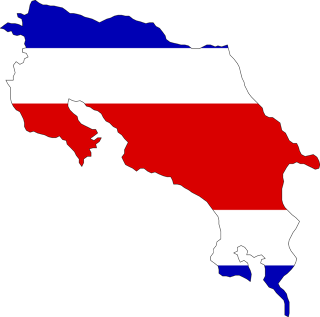
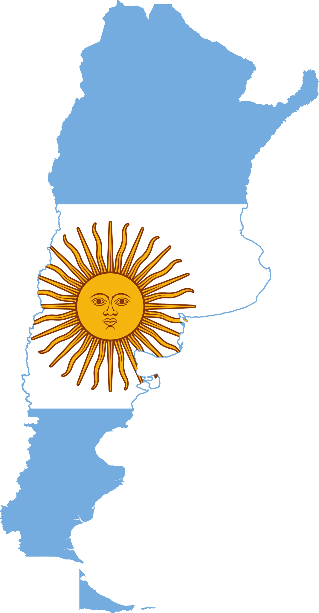

VuelaLibre
Sobre NosotrosSomos Una empresa prestigiosa que nos dedicamos viajes comodos y economicos para brindarles una experiencia inolvidable .
Mexico
México es un país megadiverso que alberga cerca del 10% de las especies registradas en el mundo, gran parte de ellas endémicas. Somos el quinto lugar con mayor número de especies de plantas, cuarto en anfibios, segundo en mamíferos y primero en reptiles.

Guatemala
Guatemala es un país ubicado en América Central, conocido por su rica herencia cultural, que combina tradiciones indígenas mayas y la influencia española colonial. Su capital es Ciudad de Guatemala. El país tiene una geografía diversa, con montañas, selvas tropicales, volcanes activos y costas en el océano Pacífico y el mar Caribe.

El Salvador
El Salvador es país montañoso y volcánico, cruzado de Este a Oeste por una gran cadena en que sobresalen varios volcanes. Los ríos más notables son el Paz, el Guascorán y el Lempa. El clima es cálido y húmedo en las costas y tierras bajas, y templado y muy sano en las alturas del interior. El suelo es muy fértil.

Costa Rica
Es un país muy montañoso con varios picos de más de 3.000m., entre ellos el volcán Irazú. El punto más alto de Costa Rica es el Cerro Chirripó (3.821m) en la Cordillera de Talamanca. Posee numerosos volcanes activos (Arenal, Irazú, Rincón de la Vieja, Poás y Turrialba).
Argentina
Argentina es un país líder en producción de alimentos, con industrias de gran escala, particularmente en agricultura y ganadería vacuna. Asimismo, tiene grandes oportunidades en algunos subsectores de manufacturas y en el sector de servicios innovadores de alta tecnología.
